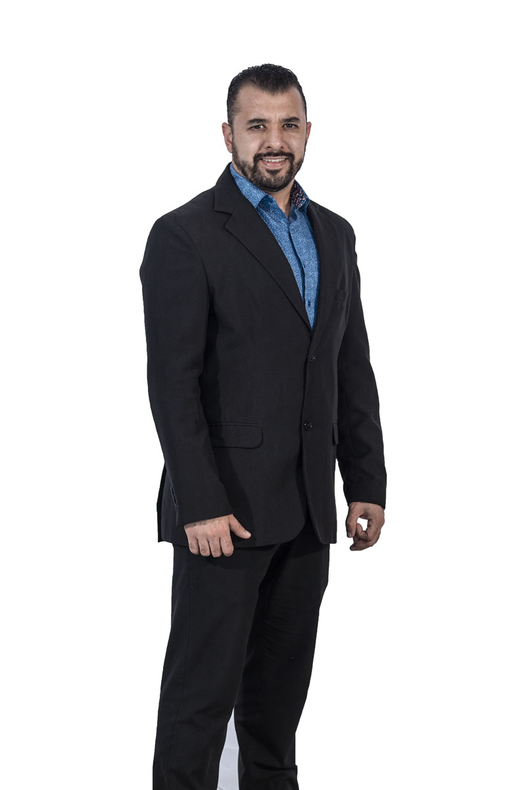

Promueve ideas creativas mediante las herramientas de la Filosofía
para intervenir en el mejoramiento de problemáticas concretas
mediante el despliegue de estrategias y tecnologías adecuadas al caso.
Plan de Estudios
Primer Cuatrimestre
Ser Humano y Medio Ambiente
Filosofía de la Educación
Taller de Lectoescritura
Estadística I
Inglés I
Segundo Cuatrimestre
Introducción a la Filosofía
Taller de Oratoria I
Lógica I
Estadística II
Inglés II
Tercer Cuatrimestre
Introducción a Aristóteles
Taller de Oratoria II
Lógica II
Metodología de la Investigación I
Habilidades del Pensamiento
Cuarto Cuatrimestre
Didáctica I
Historia de la Filosofía Medieval
Sociología Educativa
Metodología de la Investigación II
Métodos Filosóficos
Quinto Cuatrimestre
Didáctica II
Historia de la Filosofía Moderna I
Antropología Científica
Ética I
Filosofía de la Historia
Sexto Cuatrimestre
Filosofía Antigua
Historia de la Filosofía Moderna I
Antropología Científica II
Ética II
Filosofía del Conocimiento
Séptimo Cuatrimestre
Antropología Filosófica
Filosofía del Derecho
Filosofía Social
Desarrollo Evolutivo
Derecho Familiar
Octavo Cuatrimestre
Seminario de Investigación
Síntesis Filosófica
Ética Social
Filosofía Mexicana
Filosofía de la Ciencia
Noveno Cuatrimestre
Seminario de Investigación II
Síntesis Filosófica II
Ética Social II
Historia de la Filosofía del Siglo XXI
Pensamiento Estratégico
Perfil de Egreso
El profesional estará dispuesto a promover
ambientes de diálogo y fomento a la tolerancia, sobre las realidades del entorno social, así mismo
estará sensibilizado en la generación de ideas creativas desde la filosofía.

Campo Laboral
Docencia y gestión académica en Instituciones de Educación Media Superior y Superior.
Investigación en filosofía pura, social, ética y política en Institutos Públicos o Privados.
Divulgación y crítica social, cultural y política en medios de comunicación.
Consultoría y análisis en temas de responsabilidad social y ética a empresas e Instituciones Públicas y de la Sociedad Civil Organizada.
Gestión cultural en Instituciones Culturales, museos y casas de cultura.